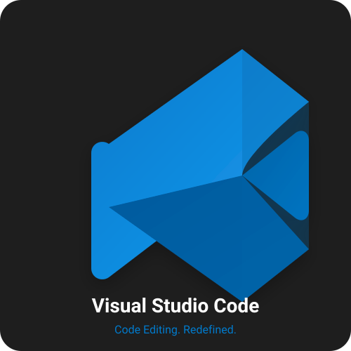
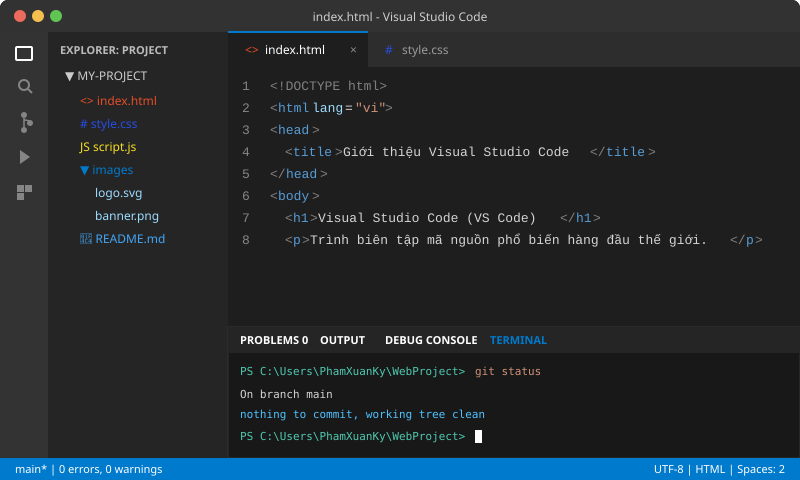

Visual Studio Code (VS Code) - Trình Soạn Thảo Mã Nguồn Phổ Biến Hàng Đầu Thế Giới
1. Giới thiệu tổng quan về sản phẩm
Visual Studio Code (thường được viết tắt là VS Code) là một trình biên tập mã nguồn (source-code editor) gọn nhẹ, hiện đại và hoàn toàn miễn phí, được tập đoàn công nghệ Microsoft nghiên cứu và phát triển cho các hệ điều hành phổ biến hiện nay bao gồm Windows, macOS và Linux. Lần đầu tiên ra mắt công chúng vào năm 2015, VS Code đã nhanh chóng vươn lên trở thành công cụ lập trình được cộng đồng phát triển phần mềm trên toàn cầu yêu thích và sử dụng nhiều nhất (theo kết quả khảo sát thường niên của Stack Overflow Developer Survey).
2. Visual Studio Code dùng để làm gì?
Visual Studio Code được thiết kế chuyên biệt để hỗ trợ các lập trình viên thực hiện toàn bộ quy trình phát triển phần mềm hàng ngày một cách nhanh chóng và tiện lợi:
- Soạn thảo và định dạng mã nguồn: Cung cấp môi trường viết code trực quan cho hầu hết các ngôn ngữ lập trình hiện đại như HTML/CSS, JavaScript, TypeScript, Python, C/C++, Java, PHP, Go, Rust,...
- Gợi ý mã thông minh (IntelliSense): Tự động hoàn thiện cú pháp, xem trước định nghĩa biến/hàm và tài liệu hướng dẫn ngay tại dòng lệnh đang soạn thảo.
- Gỡ lỗi phần mềm (Debugging): Giúp lập trình viên đặt điểm dừng (breakpoints), theo dõi giá trị biến (variable inspection) và từng bước thực thi chương trình để tìm và sửa lỗi logic.
- Quản trị phiên bản mã nguồn (Git Integration): Kết nối trực tiếp với Git và GitHub, cho phép xem lịch sử thay đổi, tạo nhánh (branch), cam kết mã nguồn (commit) và đẩy mã lên kho lưu trữ từ xa mà không cần rời khỏi màn hình soạn thảo.
- Mở rộng tính năng theo nhu cầu cá nhân: Thông qua kho tiện ích mở rộng phong phú (Marketplace), người dùng có thể bổ sung các công cụ hỗ trợ trí tuệ nhân tạo (AI Copilot), máy chủ kiểm thử cục bộ (Live Server), trình kiểm tra lỗi chính tả (Linter), và nhiều công cụ hữu ích khác.
3. Hình ảnh minh họa
Dưới đây là các hình ảnh trực quan thể hiện biểu trưng thương hiệu và giao diện làm việc thực tế của trình soạn thảo Visual Studio Code:


4. Các đặc điểm và tính năng nổi bật
Visual Studio Code chiếm trọn niềm tin của các nhà phát triển phần mềm nhờ sở hữu những ưu thế kỹ thuật vượt trội sau đây:
- Hỗ trợ đa ngôn ngữ lập trình mạnh mẽ: Mặc định tích hợp sẵn cú pháp và tính năng kiểm tra lỗi cho JavaScript, TypeScript, JSON, HTML, CSS. Đồng thời dễ dàng hỗ trợ mở rộng cho C++, C#, Java, Python, PHP, Go, Ruby chỉ với một cú nhấp chuột cài đặt extension.
- Tính năng gợi ý thông minh IntelliSense: Vượt xa tính năng tự động hoàn thành văn bản thông thường, IntelliSense phân tích cú pháp dựa trên kiểu dữ liệu, định nghĩa của các biến, hàm và các module nhập khẩu (imports) để đưa ra đề xuất mã nguồn chính xác nhất.
- Tích hợp công cụ quản lý phiên bản Git (Source Control): Giúp theo dõi trực quan các thay đổi trong từng tệp, so sánh nội dung tệp khác biệt (diff viewer), tạo commit, chuyển đổi nhánh và đồng bộ với kho chứa GitHub hoặc GitLab mà không bắt buộc phải sử dụng cửa sổ dòng lệnh ngoài.
- Trình gỡ lỗi (Interactive Debugger) chuyên nghiệp: Hỗ trợ chạy từng bước mã nguồn (Step Over, Step Into), kiểm tra giá trị biểu thức thời gian thực, quản lý ngăn xếp lệnh gọi hàm (Call Stack) cho các ứng dụng web và kịch bản thực thi.
- Kho tiện ích mở rộng khổng lồ (Extensions Marketplace): Sở hữu hệ sinh thái hơn 50.000 tiện ích bổ sung miễn phí, từ các gói giao diện (Themes), bộ icon đẹp mắt, công cụ tự động làm đẹp mã (Prettier), trợ lý mã nguồn AI đến các công cụ quản lý cơ sở dữ liệu (SQLTools, MongoDB).
- Cửa sổ dòng lệnh Terminal tích hợp: Cho phép lập trình viên mở đồng thời nhiều tab Terminal (PowerShell, Command Prompt, Git Bash, WSL Ubuntu) ngay dưới cửa sổ soạn thảo, thuận tiện cho việc chạy lệnh build, kiểm thử và quản lý gói (npm, pip).
- Tính năng cộng tác từ xa (Visual Studio Live Share): Cho phép nhiều lập trình viên cùng lúc chỉnh sửa và gỡ lỗi chung trên cùng một dự án theo thời gian thực mà không cần phải đồng bộ mã nguồn phức tạp.
5. Bảng thông số kỹ thuật và yêu cầu hệ thống
Bảng dưới đây cung cấp thông tin chi tiết về cấu hình phần cứng tối thiểu và khả năng tương thích của Visual Studio Code trên các hệ điều hành:
| Tiêu chí so sánh / Cấu hình | Hệ điều hành Windows | Hệ điều hành macOS | Hệ điều hành Linux |
|---|---|---|---|
| Phiên bản hệ điều hành hỗ trợ | Windows 10 / 11 (64-bit) | macOS 10.15 (Catalina) trở lên | Ubuntu 18.04+, Debian 10+, Fedora 36+, CentOS 8+ |
| Bộ vi xử lý (CPU) | 1.6 GHz hoặc nhanh hơn | Bộ xử lý Intel hoặc Apple Silicon (M1/M2/M3) | 1.6 GHz hoặc nhanh hơn (x64, ARM64) |
| Bộ nhớ RAM tối thiểu / Khuyến nghị | 1 GB RAM tối thiểu (Khuyến nghị 4 GB trở lên) | 1 GB RAM tối thiểu (Khuyến nghị 4 GB trở lên) | 1 GB RAM tối thiểu (Khuyến nghị 4 GB trở lên) |
| Dung lượng ổ cứng còn trống | Khoảng 500 MB cho bộ cài đặt cơ bản | Khoảng 500 MB cho bộ cài đặt cơ bản | Khoảng 500 MB cho bộ cài đặt cơ bản |
| Kiến trúc phần cứng hỗ trợ | x64, ARM64, x86 | Universal Binary (Intel x64 và Apple Silicon) | x64, ARM64, ARM32 |
| Bản quyền & Giấy phép sử dụng | Miễn phí (Giấy phép Microsoft Software License) | Miễn phí (Giấy phép Microsoft Software License) | Miễn phí (Giấy phép Microsoft Software License) |
6. Đánh giá ưu điểm và hạn chế của Visual Studio Code
Mặc dù được đánh giá rất cao, Visual Studio Code vẫn sở hữu cả những ưu thế nổi bật và một số điểm hạn chế người dùng cần lưu ý:
A. Ưu điểm nổi bật:
- Hoàn toàn miễn phí và mã nguồn mở: Được cung cấp tự do cho cả mục đích học tập lẫn thương mại mà không phát sinh bất kỳ khoản phí cấp phép nào.
- Tốc độ khởi động và hiệu năng nhanh nhẹn: Khởi chạy nhanh chóng hơn đáng kể so với các môi trường phát triển tích hợp đầy đủ (Heavy IDEs) như Visual Studio Enterprise hay Android Studio.
- Hệ sinh thái tiện ích vô cùng phong phú: Hầu như bất kỳ ngôn ngữ lập trình, bộ khung (framework) hay công cụ nào mới ra đời cũng nhanh chóng có extension tương ứng trên kho tiện ích của VS Code.
- Khả năng tùy biến giao diện linh hoạt: Người dùng có thể tùy chỉnh mọi yếu tố từ chủ đề màu sắc (Dark Theme, Light Theme, Monokai,...), phông chữ lập trình (Fira Code, Cascadia Code), phím tắt bàn phím cho tới các quy tắc thụt đầu dòng.
- Cộng đồng sử dụng đông đảo và được hỗ trợ liên tục: Đội ngũ kỹ sư Microsoft cập nhật phiên bản mới đều đặn hàng tháng kèm theo các bài viết hướng dẫn chi tiết trên trang chủ và cộng đồng hỗ trợ toàn cầu.
B. Hạn chế cần cải thiện:
-
Bản chất là Code Editor, không phải là một IDE trọn gói có sẵn: Khi mới cài đặt, VS Code chỉ là một trình soạn thảo văn bản nâng cao. Để biên dịch và chạy các dự án C++, Java hay .NET phức tạp, người dùng phải tự cấu hình thêm trình biên dịch (compiler), SDK và các tệp cấu hình JSON như
launch.jsonvàtasks.json. - Mức độ tiêu thụ bộ nhớ RAM tăng khi cài nhiều Extension: Do được phát triển dựa trên nền tảng Electron (kết hợp giữa trình duyệt Chromium và môi trường Node.js), nếu người dùng mở các thư mục dự án kích thước khổng lồ hoặc cài đặt cùng lúc quá nhiều tiện ích mở rộng, VS Code có thể chiếm dụng lượng bộ nhớ RAM đáng kể.
- Đôi khi gây bối rối cho người mới bắt đầu: Do số lượng cài đặt (settings) và tính năng mở rộng quá nhiều, sinh viên mới nhập môn có thể gặp khó khăn trong việc chọn đúng tiện ích mở rộng phù hợp cho môn học của mình.
7. Các liên kết tham khảo hữu ích
Để tìm hiểu sâu hơn, tải về và cập nhật tài liệu chính thức về Visual Studio Code, bạn có thể truy cập các đường dẫn sau:
- Trang chủ chính thức của Visual Studio Code (Microsoft) : Tải về bộ cài đặt mới nhất cho các hệ điều hành và xem các bài viết công bố tính năng mới hàng tháng.
- Trang tài liệu hướng dẫn sử dụng chính thức (VS Code Documentation) : Hướng dẫn từ cơ bản đến nâng cao về cấu hình môi trường lập trình cho Python, C++, Java, Node.js,...
- Kho tiện ích mở rộng Visual Studio Code Marketplace : Tìm kiếm, đánh giá và cài đặt hàng nghìn extension hữu ích cho dự án.
- Kho mã nguồn mở của dự án Visual Studio Code trên GitHub : Xem mã nguồn, đóng góp lỗi (issues) và theo dõi lộ trình phát triển của cộng đồng kỹ sư thế giới.